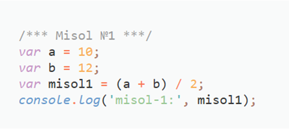

Javascript bo'yicha uyga vazifa
Tursunboyev O'rinboy
Mustahkamlash uchun masalalar:
3 ta son berilgan, shu sonlarning o’rta arifmetigini hisoblovchi dastur yarating
Kvadratning tomoni a ga teng, kvadratning perimetri (P = 4*a), Yuzi (S=a*a) ni hisoblovchi dastur yarating
To’g’ri to’rtburchakning tomonlari berilgan a va b, uning Perimetri va yuzini hisoblovchi dastur yarating
Mashina V tezlik T soat yurdi. Uning bosib o’tgan yo’lini hisoblovchi dastur yarating
Uchburchakning tomonlari berilgan: a , b va c. Uning perimetrini hisoblovchi dastur yarating
Misol uchun :
2 ta son berilgan , shu sonlarning o’rta arifmetigini hisoblovchi dastur yarating.

Natijalarni consolda ko'rishingiz mumkin!